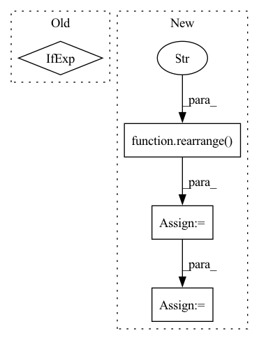

Pattern ID :7824

Before Change
x_denoised = (
self.c_skip(sigmas_padded) * x_noisy + self.c_out(sigmas_padded) * x_pred
)
x_denoised = x_denoised.clamp(-1.0, 1) if clamp else x_denoised
return x_denoised
After Change
return x_denoised.clamp(-1.0, 1.0)
else:
// Find dynamic threshold quantile for each batch
x_flat = rearrange(x_denoised, "b ... -> b (...)")
scale = torch.quantile(x_flat.abs(), self.dynamic_threshold, dim=-1)
// Clamp to a min of 1.0
scale.clamp_(min=1.0)
// Clamp all values and scale
scale = pad_dims(scale, ndim=x_denoised.ndim - scale.ndim)
x_denoised = x_denoised.clamp(-scale, scale) / scale
return x_denoised
In pattern: SUPERPATTERN
Frequency: 3
Non-data size: 4
Instances
Fragment ID: 27922990
Project Name: archinetai/audio-diffusion-pytorch
Commit Name: a5f1069e72d90085d0c07c57e803252966b0413d
Time: 2022-08-11
Author: flavio.schneider.97@gmail.com
File Name: audio_diffusion_pytorch/diffusion.py
M Class Name: Diffusion
N Class Name: Diffusion
M Method Name: denoise_fn(4)
N Method Name: denoise_fn(5)
M Parent Class: nn.Module
N Parent Class: nn.Module
M File Name: audio_diffusion_pytorch/diffusion.py
N File Name: audio_diffusion_pytorch/diffusion.py
M Start Line: 214
M End Line: 235
N Start Line: 223
N End Line: 241
'>
Before Change
dim_context = default(dim_context, dim)
self.norm = LayerNorm(dim)
self.context_norm = LayerNorm(dim_context) if norm_context else nn.Identity()
self.attn_dropout = nn.Dropout(dropout)
After Change
pos = torch.arange(window_size)
grid = torch.stack(torch.meshgrid(pos, pos, indexing = "ij"))
grid = rearrange(grid, "c i j -> (i j) c")
rel_pos = rearrange(grid, "i ... -> i 1 ...") - rearrange(grid, "j ... -> 1 j ...")
rel_pos += window_size - 1
rel_pos_indices = (rel_pos * torch.tensor([2 * window_size - 1, 1])).sum(dim = -1)
self.register_buffer("rel_pos_indices", rel_pos_indices, persistent = False)
'>
Fragment ID: 27923043
Project Name: lucidrains/robotic-transformer-pytorch
Commit Name: 1455daa18da596213bc36adc8c96dc1842624e46
Time: 2022-12-14
Author: lucidrains@gmail.com
File Name: robotic_transformer_pytorch/robotic_transformer_pytorch.py
M Class Name: Attention
N Class Name: Attention
M Method Name: __init__(5)
N Method Name: __init__(8)
M Parent Class: nn.Module
N Parent Class: nn.Module
M File Name: robotic_transformer_pytorch/robotic_transformer_pytorch.py
N File Name: robotic_transformer_pytorch/robotic_transformer_pytorch.py
M Start Line: 13
M End Line: 38
N Start Line: 134
N End Line: 167
'>
Before Change
cond_prob_drop = 0.
):
batch_size, device = image_embed.shape[0], image_embed.device
t = self.time_mlp(time) if exists(self.time_mlp) else None
cond_prob_mask = prob_mask_like(batch_size, cond_prob_drop, device = device)
After Change
// mask out image embedding depending on condition dropout
// for classifier free guidance
image_embed = torch.where(
rearrange(cond_prob_mask, "b -> b 1"),
image_embed,
rearrange(self.null_image_embed, "d -> 1 d")
)
cond = torch.cat((t, image_embed), dim = -1)
hiddens = []
'>
Fragment ID: 27922995
Project Name: lucidrains/dalle2-pytorch
Commit Name: 25d980ebbf1e22ce8396cdec400e22e83f754176
Time: 2022-04-12
Author: lucidrains@gmail.com
File Name: dalle2_pytorch/dalle2_pytorch.py
M Class Name: Unet
N Class Name: Unet
M Method Name: forward(2)
N Method Name: forward(2)
M Parent Class: nn.Module
N Parent Class: nn.Module
M File Name: dalle2_pytorch/dalle2_pytorch.py
N File Name: dalle2_pytorch/dalle2_pytorch.py
M Start Line: 411
M End Line: 414
N Start Line: 412
N End Line: 425